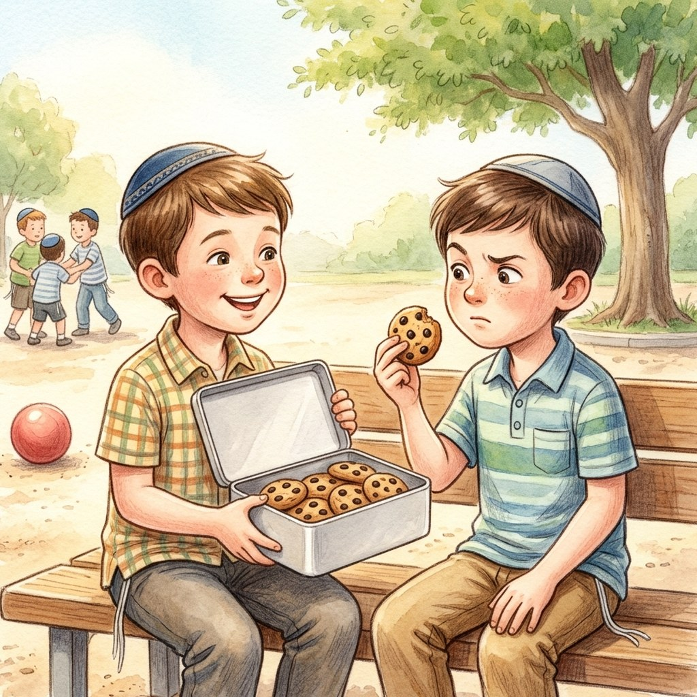

I've Got a Clue!
Shomea Ke'oneh: One Who Hears Is Like One Who Says
About this episode: At recess Shmulik makes a bracha on the cookies for Yedani, too, and then Yedani finds dark dots in his cookie and changes his mind. May he decide not to eat? The Rav explains what 'Shomea ke'oneh' means, when a bracha is said for nothing, and what to do when we leave out the words 'Melech ha'olam'.
0:00
--:--
We couldn't load the recording. Check your internet connection and try again.